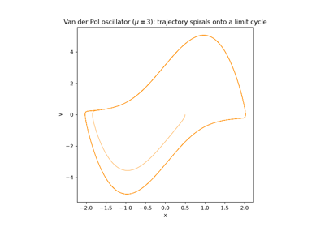
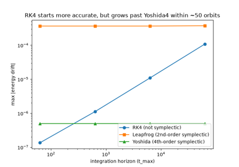
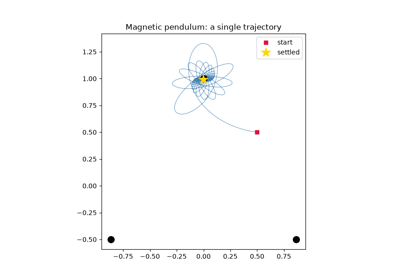

Examples#
This gallery walks through every public feature of physicskit.chaos: five
families of 2D billiards, discrete chaotic maps, continuous chaotic flows,
their quantum-mechanical analogues, the diagnostics used to quantify chaos
(Lyapunov exponents, fractal dimension, Poincare recurrence, phase-space
volume), and the interactive/animated visualizers built on top of them.
Each script in this gallery is self-contained and can be run directly with
python examples/chaos/<section>/<script>.py. Every script also carries
an RST module docstring as its title/description and uses # %% markers
to split narrative text from code, which is exactly what Sphinx-Gallery
renders into the pages below – the script is the source of truth for what
you see, not a copy of it.
Sections#
billiards – trajectories and Poincare (boundary phase-space) sections for the Circle, Ellipse, Rectangle, Sinai, Bunimovich Stadium, and Truncated Circle billiards, a side-by-side comparison of all five canonical geometries, and a demonstration of extreme sensitivity to initial conditions in a barely-perturbed circle.
maps – discrete-time chaos: the period-doubling route to chaos in the Logistic Map, the area-preserving Chirikov-Taylor Standard Map, the stretch-cut-and-stack Baker’s Map, and the Henon Map.
continuous_systems – classic flows: the Lorenz and Rossler attractors, Chua’s Circuit (the double-scroll attractor), the driven Duffing oscillator, the double pendulum, the Magnetic Pendulum’s fractal basins of attraction, and the restricted three-body problem that first led Poincare to chaos.
quantum_chaos – what becomes of these systems under quantization: the Quantum Baker’s Map, eigenstates of a quantum billiard, and the Quantum Kicked Rotor.
chaos_metrics – quantifying chaos rather than just plotting it: Lyapunov divergence and the full Lyapunov spectrum (Benettin’s QR method), fractal (box-counting and correlation) dimension, bifurcation diagrams, energy drift, phase-space volume contraction (Liouville’s theorem), Poincare recurrence and Kac’s lemma, and extracting chaos diagnostics from a raw time series with no equations at all.
interactive_and_animation – a live Matplotlib animation, trajectory color-coding, and interactive Plotly figures.
advanced – working below the
Systemabstraction: building a custom dynamical system directly from the low-level Numba integrators, comparing symplectic against non-symplectic integrators over long time horizons, saving and loading results, and interactive 3D viewing with PyVista.
Advanced: Building Custom Systems#
An example showing how to use the low-level, Numba-accelerated integrators
in physicskit.chaos.core.integrators directly – either by subclassing
physicskit.chaos.core.base_system.DynamicalSystem the same way the built-in
systems in physicskit.chaos.systems.continuous do, or by calling the
integrators on a hand-written right-hand-side function with no wrapper class
at all.

Building a Custom System with the Low-Level Integrators

Symplectic vs. Non-Symplectic Integrators: Long-Horizon Energy Drift
Billiards#
Examples illustrating the five 2D billiard geometries in
physicskit.chaos.systems.billiards: a trajectory bouncing inside each shape,
and the boundary phase-space (Poincare) section that distinguishes
integrable geometries (Circle, Rectangle) from chaotic, defocusing ones
(Sinai, Bunimovich Stadium, Truncated Circle).


Chaos Metrics#
Examples illustrating the quantitative chaos-diagnostic tools in physicskit.chaos.utils and their
companion visualizers: trajectory-divergence-based and QR (Benettin)-based Lyapunov exponent
estimation, integrator energy drift, phase-space volume contraction, Poincare recurrence / Kac’s
lemma, fractal (box-counting and correlation) dimension estimation, bifurcation diagrams for
periodically-forced continuous flows (see Logistic Map: the Period-Doubling Route to Chaos for the
discrete-map case), and Pomeau-Manneville intermittency near a tangent bifurcation.

Bifurcation Diagrams for Continuous Flows: the Duffing Oscillator

Fractal Dimension: Box-Counting and Correlation Dimension

Pomeau-Manneville intermittency: laminar phases and chaotic bursts


Phase-Space Volume Contraction (Liouville’s Theorem)

Analyzing a Raw Time Series (No Equations Required)
Continuous Systems#
Examples illustrating the continuous-time chaotic flows in
physicskit.chaos.systems.continuous: the Lorenz and Rossler attractors, the double pendulum, the
forced/damped Duffing oscillator, Chua’s circuit (the double-scroll attractor), the restricted
three-body problem (with its five Lagrange points marked), the magnetic pendulum (fractal basins of
attraction), and the sinusoidally driven, damped pendulum (the period-doubling route to chaos). Each is
integrated with the Numba-accelerated RK4 integrator from physicskit.chaos.core.integrators via the
system’s .trajectory() method.


Driven Pendulum: the Period-Doubling Route to Chaos


Magnetic Pendulum: Fractal Basins of Attraction

Restricted Three-Body Problem: Poincare’s Original Chaos

Interactive and Animated Visualizers#
Examples illustrating the dynamic visualizers in
physicskit.chaos.visualizers.dynamic_plots: a live Matplotlib animation of a
billiard trajectory alongside its growing Poincare section, interactive
Plotly figures (2D and 3D), and trajectory color-coding.
Note
Run directly (python examples/.../plot_x.py), the Matplotlib animation
opens an interactive window and the Plotly figures open in a browser tab.
In the built documentation, the animation is instead embedded as inline
HTML5 video (via Sphinx-Gallery’s
animation scraper,
enabled by matplotlib_animations: True in docs/source/conf.py) and
the Plotly figures as interactive embedded charts (via
plotly.io._sg_scraper.plotly_sg_scraper, Plotly’s own Sphinx-Gallery
scraper).


Discrete Maps#
Examples illustrating the two discrete chaotic maps in
physicskit.chaos.systems.maps: the Chirikov-Taylor Standard Map and the Henon
Map.


Quantum Chaos#
Examples illustrating physicskit.chaos.quantum: quantized versions of physicskit.chaos’s
own classical StandardMap and
BakersMap, plus the eigenstates of a quantum
particle confined to any of physicskit.chaos’s classical billiard shapes.
Note
Spectral statistics (level-spacing distributions, spectral rigidity, and
the like) are intentionally not covered here – that analysis belongs to
the separate physicskit.rmt package, which can consume the eigenphases and
wavenumbers these examples compute directly.